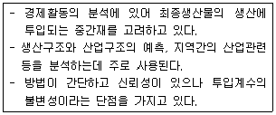
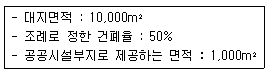
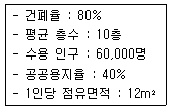

도시계획기사 (2017-09-23 기출문제)
1과목: 도시계획론
1. 토지이용계획(F-Plan)과 지구상세계획(B-Plan)을 각각 운용하면서 기초자치단체 세부지역까지 단위계획을 의무적으로 수립한 나라는?
- 독일
- 영국
- 프랑스
- 미국
(정답률: 80%)

2. 도시화가 빠르게 진행되면서 발생하는 가도시화 (Pseudo-urbanization)에 대한 설명으로 옳은 것은?
- 개발도상국가들 보다는 인구의 정체가 일어나는 국가나 지역에서 발생하는 현상이다.
- 도시의 부양능력에 비해 많은 인구가 유입되며 인구적으로 비대해진 현상을 의미한다.
- 도심의 공동화로 인해 슬럼화되는 현상을 해결하기 위해서 도심을 재생하며 활성화를 도모하는 현상이다.
- 대도시에서 비도시지역으로 인구가 전출되면서 대도시의 상주인구가 급격하게 감소하는 현상을 의미한다.
(정답률: 90%)
3. 특별시장ㆍ광역시장ㆍ시장 또는 군수는 도시계획 시설결정의 고시일로부터 단계별 진행계획을 수립해야 하는 기간은?(관련 규정 개정전 문제로 여기서는 기존 정답인 2번을 누르면 정답 처리됩니다. 자세한 내용은 해설을 참고하세요.)
- 1년 이내
- 2년 이내
- 3년 이내
- 4년 이내
(정답률: 79%)
4. 토지이용계획의 수립과정으로 상향적 접근과 하향적 접근에 대한 설명으로 옳지 않은 것은?
- 기성시가지의 유형별 대책을 수립하는 것은 상향적 접근이다.
- 도시 내 지구수준의 문제점 해결을 우선하는 것은 상향적 접근이다.
- 도시 차원에서 도시 전체의 기본 구조를 중시하는 것은 하향적 접근이다.
- 상위계획의 지침을 받아 도시의 기본계획을 설정하는 것은 상향적 접근이다.
(정답률: 82%)
5. 토지와 시설에 대한 물리적 계획 요소가 아닌 것은?
- 밀도
- 동선
- 배치
- 용도
(정답률: 74%)
6. 도시정부의예산 편성 제도 중 조직 목표 달성에 중점을 두고 장기적인 계획수립과 단지적인 예산 편성을 유기적으로 관련시킴으로써 자원 배분에 관한 의사결정을 합리적이고 일관성 있게 수행하는 것은?
- 계획예산제도
- 복식예산제도
- 영기준예산제도
- 성과주의 예산제도
(정답률: 83%)
7. GIS 공간 분석 중 네트워크 분석에 해당하지 않는 것은?
- 근린성 분석
- 최적경로 분석
- 교통 흐름 분석
- 상수도관망내 수압 분석
(정답률: 48%)
8. 고대 도시 및 도시 계획적 특성에 대한 설명으로 옳지 않은 것은?
- 로마는 광장을 중심으로 발전하였다.
- 고대 그리스의 히포다무스는 방사형 가로 체계를 신도시 건설에 적용시켰다.
- 고대 그리스 도시는 도시 입구와 신전을 축으로 중간 지점에 아고라를 배치하였다.
- 동양의 고대도시 기원은 기원전 2000년경 황하중류지방 산둥성 지역에 형성된 상왕조에서부터 비롯되었다.
(정답률: 78%)
9. 전국의 총 고용인구는 1800만명이고 전국의 제조업 고용인구는 600만명이다. 가상 도시의 제조업 고용인구가 5만명일 때 가상도시의 총 고용인구수는? (단, 가상도시의 제조업의 입지계수는 1)
- 5만명
- 10만명
- 15만명
- 20만명
(정답률: 81%)
10. 획지에 부여된 용적률과 실제 이용되고 있는 용적률과의 차이를 다른 부지에 이전할 수 있는 제도는?
- 공중권
- 개발권 양도
- 계획단위개발
- 혼합용도개발
(정답률: 80%)
11. 용도지역 중 상업지역에 해당되지 않는 것은?
- 전용상업지역
- 근린상업지역
- 일반상업지역
- 유통상업지역
(정답률: 68%)
12. 기반시설에 대한 설명으로 옳지 않은 것은?
- 도시관리계획에 의하여 설치되는 물리적 시설이다.
- 시민의 공동생활과 도시의 경제ㆍ사회활동을 원활하게 지원하기위한 시설이다.
- 도시 전체의 발전과 여타 시설과의 기능적 조화를 도모하기 위해 설치 할 수 있다.
- 기반시설의 공공성 확보를 위해 정부가 직접 설치하여 민간의 참여는 제한되고 있다.
(정답률: 83%)
13. 다음 설명에 해당하는 도시경제 분석 방법은?

- 입지상모형
- 지수곡선모형
- 투입산출모형
- 변이-할당분석모형
(정답률: 82%)
14. 도시의 일반적인 특징으로 옳지 않은 것은?
- 행정ㆍ경제ㆍ문화의 중심지 기능을 담당한다.
- 지적 엘리트와 전문가들로 구성된 공동체로서 다양한 서비스와 재화가 집중된다.
- 1차 산업의 비율이 낮고 2, 3차 산업의 비율이 높은 비농업적 활동이 주로 일어난다.
- 동질적인 집단의 성격이 강하고 주민간의 상호접촉이 지속적이고 직접적으로 발생한다.
(정답률: 82%)
15. 18~19세기에 제안된 이상도시의 계획가와 이상도시안에 대한 설명으로 옳은 것은?
- Robert Owen : 도시 대신 단일 건물인 핀란스테르(Phalanstere)를 제안하였다.
- Buckinghan : 농업과 공업이 결합된 이상적 도시안인 이상공장폰을 제안하였다.
- Ledouv : 산업혁명을 의식하여 새로운 생산 체제를 도입한 이상도시 쇼우(Chaux)를 제안하였다.
- C. Fourier : 근대 건축기술이나 과학적 진보를 적극적으로 도입할 필요성을 제시하면서 유리로 덮인 도시 빅토리아(Victoria)를 제안하였다.
(정답률: 71%)
16. 도로의 기능별 구분에 따른 설명으로 옳지 않은 것은?
- 특수도로 : 보행자 전용도로ㆍ자전거 전용도로 등 자동차 외의 교통에 전용되는 도로
- 보조간선도로 : 시ㆍ군 교통의 집산기능을 가지고 근린주거구역의 외곽을 형성하는 도로
- 국지도로 : 근린주거구역 내 교통의 집산 기능을 가지고 근린주거구역의 내부를 구획하는 도로
- 주간선도로 : 시ㆍ군 상호간을 연결하여 대량의 통과교통을 처리하며 시ㆍ군의 골격을 형성하는 도로
(정답률: 70%)
17. 미래 도시계획의 패러다임 방향으로 옳지 않은 것은?
- 지속가능한 도시개발로의 전환
- 평면적, 기능분리적 토지이용관리
- 자원에너지 절약형 도시개발로의 전환
- 시민참여의 확대와 계획 및 개발주체의 다양화
(정답률: 84%)
18. 도시계획이론의 옹호적 계획에 대한 설명으로 옳은 것은?
- 피해구제절차와 같은 사회제도를 계획 개념으로 수용한 계획이론이다.
- 계획은 합리적이며 과학적이어야 한다는 인식에 바탕을 둔 계획이론이다.
- 목요와 문제, 수단과 제약조건 등이 종합적으로 명료하게 제시되는 계획이론이다.
- 분권화된 협상과정과 상호절충과정을 통하여 이루어지는 계획이 합리적임을 주장한 계획이론이다.
(정답률: 78%)
19. 도시ㆍ군기본계획에 대한 설명으로 옳지 않은 것은?
- 도시ㆍ군관리계획의 상위계획적 성격을 갖는다.
- 5년마다 타당성 여부를 검토하여 정비하여야 한다.
- 인구ㆍ산업ㆍ재정 등 사회ㆍ경제적 측면을 포괄하는 종합계획이다.
- 수립기준은 대통령령으로 정하는 바에 따라 특별시장, 광역시장, 특별자치시장, 특별자치도지사, 시장 또는 군수가 정한다.
(정답률: 65%)
20. 전통건조물 및 문화재의 보전과 보호를 위해 지정할 수 있는 용도지구가 아닌 것은?
- 보존지구
- 최고고도지구
- 최저고도지구
- 역사문화미관지구
(정답률: 75%)
2과목: 도시설계 및 단지계획
21. 건축한계선에 관한 설명을 옳지 않은 것은?(오류 신고가 접수된 문제입니다. 반드시 정답과 해설을 확인하시기 바랍니다.)
- 가로경관에 일정한 특성을 부여할 필요가 있는 경우 등에 지정할 수 있다.
- 가로경관이 연속적으로 형성되지 않거나 벽면선이 일정하지 않을 것이 예상되는 경우에 지정 할 수 있다.
- 가로경관이 연속적인 형태를 유지하거나 구역 내 중요 가로변의 건축물을 가지런하게 할 필요가 있는 경우에 사용할 수 있다.
- 도로에 있는 사람이 개방감을 가질 수 있도록 건축물을 도로에서 일정거리 후퇴시켜 건축하게 할 필요가 있는 곳에 지정할 수 있다.
(정답률: 41%)
22. 보행자 통행이 주이고 차량 통행이 부수적인 도로계획기법으로, 1970년 네덜란드 델프트 시에서 처음 등장한 본엘프(Woonerf)가 대표적인 것은?
- 카프리존
- 보차공존도로
- 보차혼용도로
- 보행전용도로
(정답률: 78%)
23. 주거환경의 제요소 중 자연ㆍ환경적 측면에 대한 설명으로 옳지 않은 것은?
- 식생, 특히 교목은 단지 내 오픈스페이스의 일사량 조절에 큰 영향을 미치는 요소이다.
- 인공성 표면 재료(아스팔트, 콘크리트, 돌 등)는 토양이나 식생으로 덮인 지표면보다 느리게 열을 흡수하고 전달한다.
- 일조는 단독적 요소라기보다는 조망ㆍ프라이버시와 함께 고려되어야 하므로 건물의 높이만 감안하여 일률적으로 규정 할 수 없다.
- 지형이나 지세(등고선, 경사, 지표면 등)는 도로의 구배, 토지이용, 건물의 배치, 시각적인 효과, 유수의 형태 등에 있어 주거환경의 결정에 있어서 중요한 요소이다.
(정답률: 83%)
24. 다음의 주택단지 획지ㆍ가구계획에 관한 설명 중 가장 관계가 없는 것은?
- 획지의 형태를 결정하는 세장비는 가구전체의 도로율을 증가시킬 수 있도록 하여, 효율적인 가구구성이 되게 해야 한다.
- 획지계획은 개발이 이루어지는 최소 단위로 토지를 구획하여 장차 일어날 단위개발의 토지 기반을 만들어주는 행위이다.
- 획지와 유사하게 사용되는 용어로서 필지와 대지가 있는데 필지는 지적법상 하나의 소유권(지번)이 부여되는 단위이며, 대지는 건축행위가 이루어지는 최소단위를 의미한다.
- 가구는 도로에 의해 둘러싸여지는 일단의 토지공간으로서 고가구의 구성은 개별 획지로 공공서비스시설(도시하부시설)을 적절하게 공급할 수 있도록 가로망과 획지와의 결합관계를 설정해주는 계획이다.
(정답률: 59%)
25. 주민이 지구단위계획의 수립 및 변경에 관한 사항을 제안하는 때에 갖추어야 할 요건 중, 제안한 지역의 대상토지면적이 얼마 이상에 해당하는 토지소유자의 동의가 있어야 하는가? (단, 국공유지의 면적은 제외한다.)
- 2/3 이상
- 1/3 이상
- 1/2 이상
- 1/4 이상
(정답률: 72%)
26. 산업유통형 지구단위계획 수립기준에서 건물의 색채에 대한 설명으로 옳지 않은 것은?
- 건물의 주조색은 주변경관과 조화되도록 그 범위를 결정한다.
- 건물의 부차색은 주조색의 보색 계통의 색으로 선택하도록 한다.
- 건물의 강조색은 원색도 사용가능하나 전체 면적의 20%를 넘지 않도록 한다.
- 굴뚝과 같이 랜드마크적인 요소에 강조색을 적용하되 검정색 등 산업시설의 특성을 나타내는 저채도의 무채색은 지양한다.
(정답률: 64%)
27. 다음 중 1대당 주차 소요면적이 가장 작은 각도 주차 형식은? (단, 소형차의 경우이며 장애인용 주차단위 구획의 경우는 고려하지 않는다.)
- 30° 전진주차
- 45° 전진주차
- 60° 후진주차
- 90° 후진주차
(정답률: 71%)
28. 자구단위계획구역에서 대지면적의 일부가 공공시설부지로 제공되도록 계획되는 경우, 다음의 조건에서 완화 받을 수 있는 건폐율의 범위는?

- 53% 이내
- 55% 이내
- 57% 이내
- 60% 이내
(정답률: 71%)
29. 단지계획을 할 때, 획지(劃地)에 관한 설명으로 적절하지 않은 것은?
- 세장비는 앞너비에 대한 깊이의 비율이다.
- 세장비가 클 경우에는 단변 도로에 면한 부분을 앞길이로 설정한다.
- 간선도로변에 면한 획지는 세장비가 큰 대형 획지를 1켜로 배치한다.
- 부정형 가구의 끝부분의 획지 분할선은 도로에 수직으로 만나도록 한다.
(정답률: 55%)
30. 1967년 뉴욕에서 처음으로 채택되기 시작한 제도로 도심부내 특정지역이나 부지에서 공공과 민간의 개발을 효율적으로 유도ㆍ촉진함으로써 공공이 의도하는 구체적인 도시설계 목표를 달성하기 위해 개발된 특수한 형태의 지역지구제는?
- 영향지역지구제(Impacat Zoning)
- 특별지역지구제(Special Zoning)
- 유동지역지구제(Floation Zoning)
- 성능지역지구제(Performance Zoning)
(정답률: 65%)
31. 도시공원의 설치 및 규모의 기준에서 규모가 큰 것부터 작은 순으로 올바르게 나열된 것은?
- 묘지공원＞도보권 근린공원＞체육공원＞어린이 공원
- 도보권 근린공원＞묘지공원＞어린이 공원＞체육공원
- 묘지공원＞체육공원＞도보권 근린공원＞어린이 공원
- 도보권 근린공원＞묘지공원＞체육공원＞어린이 공원
(정답률: 63%)
32. 다음 중 생활권의 위계를 구성단위의 크기가 큰 것부터 순서대로 올바르게 나열한 것은?
- 근린주구＞근린분구＞인보구
- 근린분구＞근린주구＞인보구
- 인보구＞근린주구＞근린분구
- 근린주구＞인보구＞근린분구
(정답률: 86%)
33. 다음 중 단지계획의 수립과정을 크게 목표설정단계, 조사ㆍ분석단계, 기본구상ㆍ대안설정단계, 기본계획ㆍ기본설계단계, 실시설계ㆍ집행계획단계로 구분할 때 해당 단계에 대한 설명이 옳지 않은 것은?
- 조사ㆍ분석단계 : 답사와 통계적인 자료로부터 기초조사를 수행한다.
- 기본구상 : 대안설정단계 : 설정한 목표에 따라 계획의 지침과 방향을 작성하는 과정이다.
- 기본계획ㆍ기본설계단계 : 건축ㆍ토목ㆍ조경ㆍ각종 설비등으로 구분되어 각 분야의 전문가에게 의뢰하여 작성한다.
- 목표설정단계 : 계획의 전제가 되는 목표를 세우는 것과 그 계획 목표에 따라 궁극적으로 달성하고자 하는 목적을 규정하고 구체화하는 단계이다.
(정답률: 73%)
34. 아래 조건에서의 상업지역의 면적(ha)은?

- 13.0 ha
- 14.0 ha
- 15.0 ha
- 18.0 ha
(정답률: 67%)
35. 개별 획지에 적용되는 개발밀도나 녹지율 등을 전체 단지 단위로 적용하여 종합계획안을 마련한 후 지방정부의 심사와 협의를 거쳐 인가를 받아 개발하는 방식은?
- 공동개발
- 공영개발
- 계획단위개발
- 주상복합개발
(정답률: 73%)
36. 계획단위개발(PUD)의 내용으로 옳지 않은 것은?
- 도시근교나 잔원주택지의 개발방식에 많이 적용되었다.
- 제한 규정을 완화 받아 용적률, 건물의 용도ㆍ형태ㆍ높이 등 계획의 창의성 발휘가 가능하다.
- 학교, 공원, 커뮤니티시설 등 근린생활권에 필요시설 적용으로 근린생활권 개념 도입이 가능하다.
- 계획단위개발 사업으로 일시에 계획 승인을 받아야 하므로 이후에는 수정 또는 변경이 곤란하다.
(정답률: 75%)
37. 다음의 국지도로 유형 중 부정형 지형에 적용이 용이한 편이며 통과교통이 차단되어 보행의 안전성과 주거환경의 쾌적성을 확보할 수 있으나, 개별 획지로의 접근성은 다소 불리한 것은?
- S자형 도로
- T자형 도로
- 격자형 도로
- 쿨데삭형 도로
(정답률: 78%)
38. 다음 중 Litton)이 산림 경관을 분석하는데 사용한 시각회랑에 의한 방법에서, 경관의 변화요인(variable factors)에 해당하지 않는 것은?
- 시간(tiom)
- 계절(season)
- 거리(distance)
- 연속(sequence)
(정답률: 67%)
39. 지구단위계획 수립의 일반원칙에 대한 내용으로 옳지 않은 것은?
- 입안권자는 지구단위계획을 작성하는 때에 도시ㆍ군계획, 건축, 경관, 토목, 조경, 교통 등 필요한 분야의 전문가의 협력을 받을 수 있다.
- 쾌적하고 편리한 환경이 조성되도록 지역현황 및 성장잠재력을 고려하여 적절한 개발밀도가 유지되도록 하는 등 환경 친화적으로 계획을 수립 하여야 한다.
- 도로, 상ㆍ하수도, 전기공급설비 등 기반시설의 처리ㆍ공급 수용능력과 건축물의 연면적이 적정한 조화를 이루도록 하여 기반시설 용량이 부족하지 아니하도록 한다.
- 정비구역 및 택지개발예정지구에서 시행되는 사업이 완료된 후 20년이 경과한 지역에 수립하는 지구단위계획은 기존의 기반시설 및 주변환경에 적합하고 과도한 재건축이 되지 않도록 하여야 한다.
(정답률: 78%)
40. 페리(Clarence A. Perry)가 주장한 근린주구간위(Neighborhood Unit)에 관한 6가지 원칙에 해당하지 않는 것은?
- 하나의 초등학교를 유지할 수 있는 인구규모를 갖도록 개발한다.
- 주민들에게 필요한 작은 공원과 여가 공간의 체계가 수립되어야 한다.
- 학교와 기타 다른 공공시설 부지는 근린단위의 중심에 적절히 모여야 한다.
- 통과교통을 허용하되 가로망은 근린단위 안의 순환이 원활하도록 계획해야 한다.
(정답률: 84%)
3과목: 도시개발론
41. 다음 중 88 올림픽 이후의 주택가격 폭등에 대처하기 위한 주택 대량 공급 방안으로 건설된 수도권 1기 신도시만을 나열한 것은?
- 분당, 일산, 과천, 김포, 파주
- 분당, 일산, 평촌, 산본, 중동
- 화성, 송파, 파주, 분당, 일산
- 목동, 과천, 상계, 영통, 광명
(정답률: 72%)
42. 기업금융과 대별되는 프로젝트 파이낸싱에 대한 설명으로 옳은 것은?
- 비소구금융 및 부외금융의 특성을 갖는다.
- 상환재원은 사업주의 전체 재원을 기반으로 한다.
- 공공기관 입장에서는 사업 위험의 분산 효과가 작다.
- 민간의 입장에서는 기업금융에 비하여 금융 비용의 절감이 불가능하다.
(정답률: 73%)
43. Cathorpe(1993)rk 정리한 TOD(Transit Oriented Development)의 원칙으로 틀린 것은?
- 지상 공간이 아닌 지하공간을 최대한 활용
- 주택의 유형, 밀도, 비용의 혼합 배치
- 공공공간을 건물 배치 및 근린생활의 중심지로 조성
- 기존 근린지구 내에 대중 교통 노성을 따라 재개발 촉진
(정답률: 73%)
44. 도시개발에서 발생 가능한 위험의 유형을 시장 위험(market risk), 금융위험(financial risk), 건설 관련 위험(construction risk)으로 나눌 때, 다음 중 시장위험과 관련된 사항이 아닌 것은?
- 문화재의 출토
- 소비자의 선호도 변화
- 경쟁구조 변화
- 분양가 책정의 적정성
(정답률: 79%)
45. 도시개발사업을 위한 민간 투자 유치 방법 중, 국가 또는 지방 자치단체 소유의 기존 시설을 정비한 사업 시행자에게 일정 기간 동안만 해당 시설에 대한 소유권을 인정하는 방식은?
- BOT 방식
- BTO 방식
- ROT 방식
- ROO 방식
(정답률: 50%)
46. 인구성장이 완만하게 감소할 것으로 예측 되는 도시에서 사용되는 인구예측방법은?
- 등비급수법
- 등차급수법
- 이중지수모형
- 집단생잔모형
(정답률: 50%)
47. 특정 도시개발사업(사업 운영기간이 3년)에 700억원을 투자하여 매년 말 300억원의 수익이 기대 될 경우 동 사업의 순현가는 다음 중 어느 것인가?(오류 신고가 접수된 문제입니다. 반드시 정답과 해설을 확인하시기 바랍니다.)
- 19억원
- 46억원
- 121억원
- 3⑤억원
(정답률: 39%)
48. 도시개발방식의 유형별 분류가 틀린 것은?
- 개발주체-공공개발, 민간개발, 민관합동개발
- 토지취득방식-전면매수방식. 환지방식, 혼용방식
- 개발대상지역-신도시 개발, 위성도시개발
- 토지의 용도-택지개발, 유통단지개발, 복합단지개발
(정답률: 68%)
49. 다음 부동산 투자의 유형 중 자본의 성격은 자본투자(equity financing)이면서 운용시장의 형태가 공개시장(public market)에 해당하는 것은?
- 사모부동산펀드
- 부동산투자회사
- 상업용저당채권
- 직접대출
(정답률: 47%)
50. 다음 중 주민 참여형 도시개발의 유형이 아닌 것은?
- 주민발의
- 개발협정
- 주민투표
- 공공협약
(정답률: 59%)
51. 도시공원 및 녹지등에 관한 법률상 생활권 공원에 해당되지 않는 것은?
- 소공원
- 어린이공원
- 체육공원
- 근린공원
(정답률: 72%)
52. 도시 및 주거환경정비법에 대한 설명으로 옳은 것은?
- 주민대표회의는 5인 이상, 10인 이하로 구성하여 절차에 따라 시장ㆍ군수에게 통보하여야 한다.
- 도시ㆍ주거환경정비기본계획의 수립은 특별시장ㆍ광역시장 또는 시장이 수립하며, 5년 단위로 수립하여야 한다.
- 시장ㆍ군수는 정비사업을 효율적으로 추진하기 위하여 필요하다고 인정하는 경우 정비구역을 2 이상의 구역으로 분할할 수 있다.
- 시장ㆍ군수는 정비계획을 수립하여 15일 이상 주민에게 공람하고 지방의회의 의견을 들은 후 시ㆍ도지사에게 정비구역지정을 신청하여야 한다.
(정답률: 54%)
53. 도시개발사업의 경제적 타당성 분석에 관한 설명으로 가장 거리가 먼 것은?
- 경제적 타당성 분석의 전개과정은 상식적이고 합리적으로 도시개발사업을 평가한다.
- 도시개발사업의 경제적 타당성 분석에서 할인율은 고려하지 않는다.
- 경제적 타당성 분석의 평가지표로 비용-편익비(B/C), 내부수익률(IRR)을 이용할 수 있다.
- 도시개발에서의 경제적 타당성은 개발 사업에 소요되는 비용보다 발생되는 수익이 많을 때 인정된다.
(정답률: 82%)
54. 지역파급효과를 측정하는 분석방법 중 올바른 것은?
- 중력모형
- 허프모형
- 라우리모형
- 투입산출모형
(정답률: 43%)
55. 연간 대통령령으로 정하는 호수(戶數)이상의 주택건설사업을 시행하여는 자는 국토교통부장관에게 등록하여야 하는데 이에 해당되는 사업 주체는?
- 국가ㆍ지방자치단체
- 한국토지주택공사
- 건설법인
- 지방공사
(정답률: 50%)
56. 복합용도개발(MXD)의 사회적ㆍ경제적 효과로 가장 거리가 먼 것은?
- 도시의 외연적 확산 완화
- 수직 통행의 감소를 통한 교통 혼잡 완화
- 직주근접에 따른 통행거리 감소
- 도시 개발 리스크 감소
(정답률: 62%)
57. 다수의 대안이 제시 되었을 때 다면적 평가기준에 의해 복잡한 문제를 체계적으로 단순 구조화하여 합리적 결정을 내릴 수 있도록 유도하는 분석 방법은?
- CVM(Contingency Valuation Method)
- NPV(Net Present Value)
- IRR(Internal Rate Retuen)
- AHP(Analytical Hierarchical Processs)
(정답률: 64%)
58. 프로젝트 파이낸싱(PF:Project Financing)의 자금조달 형태 중 가장 큰 비중을 차지하며 대부분 상업은행에서 제공되는 차입금(이자 수익을 목적으로 투자)리 이에 해당하는 것은?
- 선순위 채권
- 후순위 채권
- 자기 자본
- 부동산 펀드
(정답률: 72%)
59. 재정비촉진지구의 유형에 해당하는 것은? (단, 도시재정비 촉진을 위한 특별법의 규정을 적용)
- 도심지형
- 저밀복합형
- 고밀복합형
- 부도심형
(정답률: 52%)
60. 대중교통중심개발(TOD: Transit Orented Development)의 개념과 거리가 먼 것은?
- 복합고밀개발
- 보행거리 내 상업, 주거, 업무, 공공시설 배치
- 자동차에 대한 의존도 감소
- 주민참여의 극대화
(정답률: 76%)
4과목: 국토 및 지역계획
61. 성장극(geowth pole)이란 개념을 처음으로 주장하여 성장거점이론을 발전시킨 사람은?
- 페오루(Perroux)
- 클라크(C.Clark)
- 미르달(G.Myrdal)
- 쿠즈네츠(S.Kuznets)
(정답률: 61%)
62. 다음 중 입지계수법(Location Quotient Method)에 대한 설명으로 옳지 않은 것은?
- 중간재의 특성을 고려한 장점이 있다.
- 수출기반모형 중 하나인 입지계수법은 수요 모형에 해당된다.
- 어떤 산업의 생산품에 대한 수요 수준이 전국적으로 동일하다고 가정하는 모순이 있다.
- A지역 특정산업의 입지계수(LQ값)가 1보다 크면 A지역은 해당 산업이 비교적 특화되어 있다는 의미다.
(정답률: 61%)
63. 신고전이론에 대한 설명으로 적합하지 않은 것은?
- 공급측면을 강조한 이론이다.
- 중심과 주변의 종속관계를 중시한다.
- 생산능력은 생산요소에 의존한다고 가정한다.
- 지역 간 생산요소의 이동을 성장요인으로 파악한다.
(정답률: 41%)
64. 지역계획과정에서 주민 참여의 기대 효과로 볼 수 없는 것은?
- 주민 요구에 대한 행정책임이 면제
- 주민의 심리적 욕구충족과 주체성 회복
- 주민의 지지와 협조를 통한 집행의 효율화
- 주민요구를 통한 행정 수요 파악으로 사업의 우선 순위 결정에 도움
(정답률: 78%)
65. 1980년대 영국에서 도시재생을 위해 재산세 등의 조세감면, 기업자유보장, 인허가 규제완화 등을 주요 내용으로 하는 신설지구는?
- 오버레이존
- 개발촉진지구
- 조세감면지구
- 엔터프라이즈존
(정답률: 61%)
66. 국토기본법에서 정한 국토관리의 기본 이념으로 적합하지 않은 것은?
- 국토의 균형있는 발전
- 환경친화적인 국토관리
- 국토에 다른 사회체계의 개혁
- 경쟁력 있는 국토여건의 조성
(정답률: 79%)
67. 입지론(location theory)에서 제시하고 있는 산업입지에 관계하는 중요 요소가 아닌 것은?
- 교통
- 노동
- 시장
- 지가
(정답률: 55%)
68. 서울시 주변에 위치한 수원, 안성, 용인 등으로 대학교가 이전되거나 분교가 설치되는 현상과 가장 직접적으로 관련 있는 것은?
- 국토기본법
- 수도권정비계획법
- 경기도 도시계획조례
- 서울특별시 도시계획조례
(정답률: 83%)
69. 다음 중 국토 및 지역계획을 평가하는 과정에서 주요 논점으로 적절하지 못한 것은?
- 계획의 유연성
- 계획의 적절성
- 계획의 효율성
- 계획의 지속가능성
(정답률: 72%)
70. 공공투자분석에 사용되는 내부수익률에 관한 설명으로 옳지 않은 것은?
- 사업시행의 순현재가치가 0이 되도록 하는 할인율로 계산된다.
- 투자 사업이 원만히 진행된다는 전제하에서 기대되는 예상수익률이다.
- 결정된 평가기간 내에 총편익과 투입된 총 비용이 일치하는 이자율이다.
- 내부수익률은 상호배타적인 사업의 절대적 규모의 차이를 적절히 고려한다.
(정답률: 52%)
71. 2012년부터 국토계획 및 정책에 관한 중요사항을 심의하기 위해서 마련된 국무총리 소속기관은?
- 국토정책위원회
- 국가균형발전위원회
- 주택정책심의위원회
- 중앙도시계획위원회
(정답률: 77%)
72. 결절지역(nodal region)에 관한 설명으로 옳지 않은 것은?
- 이질적인 공간경제의 속성과 공간적 차원을 다루는 지역분류법이다.
- 기능적 측면에서 공간상의 흐름, 접촉 상호의존성을 고려한 개념이다.
- 인구와 경제적 활동이 집적하게 되므로 중심지역과 주변지역으로 나뉘어진다.
- 지역경제 및 지역정책 목적을 효과적으로 달성하기 위해 인위적으로 설정한 지역이다.
(정답률: 66%)
73. 도시 순위-규모 법칙에서 말하는 q값(순위규모계수)이 과거 1.0에서 현재 2.0으로 증가한 어느 나라의 도시체계의 특징에 관한 설명으로 가장 적절한 것은?
- 과거보다 도시화 속도가 2배 증가하였다.
- 과거보다 수위도시 또는 소수의대도시에 인구가 더욱 많이 집중하였다.
- 과거보다 수위도시의 인구가 다른 지역으로 분산하여 분포하는 현상으로 전환되었다.
- 과거에는 인구가 균형을 이루었으나, 현재는 도시지역인구가 농촌지역인구의 2배가 되었다.
(정답률: 62%)
74. 다음 중 지역 간 불균형성장이론을 옹호한 학자는?
- 넉스(Nurkse)
- 루이스(Lewis)
- 허쉬만(Hirschman)
- 로젠스타인 로단(Rosenstein-Rodan)
(정답률: 73%)
75. 기반부문의 고용인구가 100명, 비기반문의 고용인구가 200명일 때, 기반비(A)와 경제기반승수(B)는?
- A : 0.5, B : 2.0
- A : 0.5, B : 3.0
- A : 2.0, B : 2.0
- A : 2.0, B : 3.0
(정답률: 67%)
76. 국토기본법령상 국토종합계획에 대한 설명으로 옳은 것은?
- 특정지역을 대상으로 특별한 정책목적을 달성하기 위해 수립하는 계획
- 국토전역을 대상으로 하여 국토의 장기적인 발전 방향을 제시하는 종합계획
- 국토 전역을 대상으로 하여 특정 부문에 대한 장기적인 발전 방향을 제시하는 계획
- 도 또는 특별자치도의 관할 구역을 대상으로 하여 해당 지역의 장기적인 발전 방향을 제시하는 종합계획
(정답률: 75%)
77. 다음 중 소자(E. Soja, 1971)가 계획단위로서의 공간특성을 거리(distance)로 분류한 내용에 해당하지 않는 것은?
- 시간거리(time distance)
- 마찰거리(frictional distance)
- 인식거리(perceived distance)
- 물리적거리(physical distance)
(정답률: 60%)
78. 다음 중 Boudeville의 지역 유형 분류에 근거한 결절지역에 해당하지 않는 것은?
- 캐나다의 대도시권(CMA)
- 레일리(W.Relly)의 도시세력권
- 클라센(L.Klassen)의 저개발지역
- 미국의 표준대도시통계지역(SMSA)
(정답률: 59%)
79. 다음 중 국토 및 지역개발의 관점에서 중앙 정부주도의 하향식 개발을 지향하는 것은?
- 도농통합개발
- 지역생활권개발
- 성장거점개발
- 농어촌정주권개발
(정답률: 72%)
80. 윌리암슨(Williamson)이 주장한 지역 간 소득격차와 국가발전 단계와의 관계에 대한 설명으로 가장 옳은 것은?
- 지역 간 소득격차는 역U자형 곡선을 그린다.
- 지역 간 소득격차는 국가 발전의 초기 단계에 가장 작다.
- 윌리암슨은 미르달의 이론을 경험적으로 검증하였다.
- 누적적 인과법칙에 의하여 지역격차가 발생함을 밝혔다.
(정답률: 66%)
5과목: 도시계획관계법규
81. 건축법의 정의에 따른 ‘도로’의 너비로 옳은 것은?
- 2m 이상
- 3m 이상
- 4m 이상
- 5m 이상
(정답률: 61%)
82. 건축법상 건축물의 대지는 최소 얼마 이상이 도로에 접하여야 하는가? (단, 자동차만의 통행에 사용되는 도로는 제외)
- 2m
- 3m
- 4m
- 5m
(정답률: 80%)
83. 건축법에서 정의하는 초고층 건축물에 해당하는 층수와 높이로 옳은 것은?
- 30층 이상 150미터 이상
- 30층 이상 200미터 이상
- 50층 이상 150미터 이상
- 50층 이상 200미터 이상
(정답률: 61%)
84. 다음 시설 중 도시계획 결정 대상이 아닌 것은?
- 철도
- 호텔
- 도축장
- 보행자 전용도로
(정답률: 69%)
85. 다음 공원관리청이 아닌 자의 도시공원 및 공원 시설의 설치ㆍ관리에 대한 설명으로 옳지 않은 것은?(오류 신고가 접수된 문제입니다. 반드시 정답과 해설을 확인하시기 바랍니다.)
- 공원관리자는 도시공원대장의 작성 및 보관 권한을 대행할 수 있다.
- 공원관리자는 도시공원 또는 공원시설의 관리방법에 관한 공고 권한을 대행할 수 있다.
- 공원관리자는 도시공원 또는 공원시설의 관리에 소요되는 비용의 부담에 관한 협의권한을 대행할 수 없다.
- 공원관리자는 「국토의 계획 및 이용에 관한 법률」에 따른 도시ㆍ군계획시설사업 시행자의 지정과 실시계획의 인가를 받아 도시공원 또는 공원시설을 설치할 수 있다.
(정답률: 64%)
86. 도시개발사업에 있어서 과소토지가 되지 않기 위해 특히 필요한 경우 입체 환지를 할 수 있는데, 이러한 입체 환지에 대한 내용으로 옳지 않은 것은?
- 입체 환지 계획의 작성에 관하여 필요한 사항은 대통령이 정할 수 있다.
- 시행자는 환지 계획 작성 전에 실시계획의 내용등의 사항을 토지소유자에게 통지해야 한다.
- 시행자는 건축물의 일부와 그 건축물이 있는 토지의 공유지분을 부여할 수 있다.
- 환지의 신청 기간은 통지한 날부터 30일 이상 60일 이하로 하여야 한다.
(정답률: 36%)
87. 도시개발사업의 개발계획 수립 및 시행 등과 관련한 대상지 주민의 동의 기준이 옳은 것은?
- 환지 방식의 개발계획 수립 시 환지 방식이 적용되는 지역의 토지면적의 3분의 2 이상에 해당하는 토지 소유자와 그 지역의 토지 소유자 총수의 3분의 1이상의 동의를 받아야 한다.
- 조합 설립 인가를 신청하려면 해당 도시개발구역의 토지면적의 3분의 1이상에 해당하는 토지 소유자와 그 구역의 토지 소유자 총수의 1분의 1 이상의 동의를 받아야 한다.
- 도시개발구의 토지 소유자가 토지 등을 수용하는 경우 사업 대상 토지면적의 3분의 2 이상에 해당하는 토지를 소유하고 토지 소유자 총수의 3분의 1 이상에 해당하는 자의 동의를 받아야 한다.
- 토지 소유자가 도시개발구역의 지정을 제안하려는 경우 대상 구역 토지면적의 3분의 2 이상에 해당하는 토지 소유자의 동의를 받아야 한다.
(정답률: 73%)
88. 국토의 효율적 이용 및 관리를 위한 성장관리방안 수립지역에서의 건폐율 완화기준으로 옳지 않은 것은?
- 계획관리지역 : 50퍼센트 이하
- 자연녹지지역 : 30퍼센트 이하
- 생산관리지역 : 30퍼센트 이하
- 보전녹지지역 : 20퍼센트 이하
(정답률: 56%)
89. 주택법에 의한 사업계획의 승인 시 사업계획 승인권자에게 첨부하지 않아도 되는 서류는?
- 사용검사계획서
- 주택관리계획서
- 입주잡모집계획서
- 공구별 공사계획서
(정답률: 41%)
90. 중앙행정기관의 장이나 지방자치단체의 장은 다른 법률에 따라 지정되는 토지 이용에 관한 지역ㆍ지구구역 또는 구획 중 대통령령으로 정하는 면적 이상을 지정 또는 변경하려면 국토교통부장관의 협의 및 승인을 받아야 한다. 이때 국토교통부장관이 협의 또는 승인을 받기 위해 중앙도시계획위원회의 심의를 거치지 않아도 되는 경우는?
- 농림지역에서 「농지법」에 따른 농업진흥지역을 지정하는 경우
- 자연환경보전지역에서 「수도법」에 따른 상수원 보호구역을 지정하는 경우
- 자연환경보전지역에서 「자연환경보전법」에 따른 생태ㆍ경관보전지역을 지정하는 경우
- 보전관리지역이나 생산관리지역에서 「습지보전법」에 따른 습지보호지역을 지정하는 경우
(정답률: 57%)
91. 다음 중 수도권정비계획법에 따른 과밀부담금에 대한 설명으로 옳지 않은 것은?
- 과밀부담금의 부과 대상은 성장관리권역에 속하는 지역이다.
- 과밀부담금은 부과 대상 건축물이 속한 지역을 관할하는 시ㆍ도지사가 부과ㆍ징수한다.
- 시ㆍ도지사는 납부 의무자가 납부 기한까지 과밀부담금을 내지 아니하면, 부담금의 100분의 5에 상당하는 가산금을 징수 할 수 있다.
- 과밀부담금은 건축비의 100분의 10으로 하되, 지역별 여건 등을 고려하여 대통령령으로 정하는 바에 따라 여건 등을 고려하여 대통령령으로 정하는 바에 따라 건축비의 100분의 5까지 조정할 수 있다.
(정답률: 42%)
92. 도시ㆍ주거환경정비기본계획의 수립 내용에 해당하지 않는 것은?
- 정비사업의 기본방향
- 정비사업의 사업기간
- 사회복지시설 및 주민문화시설 등의 설치 계획
- 인구ㆍ건축물ㆍ토지이용ㆍ정비기반시설ㆍ지형 및 환경 등의 영향
(정답률: 39%)
93. 택지개발촉진법에 의한 택지개발사업 실시계획 변경승인을 받아야 하는 경우는?
- 사업비의 100분의 10범위에서 사업비의 증감
- 사업비의 100분의 10범위에서 사업면적의 증가
- 사업면적의 100분의 10범위에서 사업면적의 감소
- 승인을 얻는 사업비의 범위에서의 시설의 설치 변경
(정답률: 55%)
94. 국토종합계획과 조화를 이뤄야 하는 지역계획 중 국토기본법에 의해 수립되는 지역계획은?
- 지역개발계획
- 광역권개발계획
- 수도권정비계획
- 개발진흥지구계획
(정답률: 56%)
95. 수도권정비계획법에 따른 권역에 해당하지 않는 것은?
- 과밀억제권역
- 이전촉진권역
- 성장관리권역
- 자연보전권역
(정답률: 70%)
96. 다음 중 산업단지의 지정에 관한 설명으로 옳지 않은 것은? (문제 오류로 실제 시험에서는 1, 4번이 정답처리 되었습니다. 여기서는 1번을 누르면 정답 처리 됩니다.)
- 도시첨단산업단지는 국토교통부장관이 지정하는 경우, 시ㆍ도지사의신청을 받아 지정한다.
- 국토교통부장관은 관계 중앙행정기관의 장과 협의 후, 심의회의 심의를 거쳐 국가산업단지를 지정하여야 한다.
- 시장ㆍ군수 또는 구청장은 시ㆍ도지사에게 도시 첨단산업단지의 지정을 신청하고자 하는 때에는 산업단지개발계획을 작성하여 제출하여야 한다.
- 일반산업단지는 시ㆍ도지사 또는 대통령령으로 정하는 면적 미만의 산업단지의 경우에는 시장ㆍ군수 또는 구청장이 지정 할 수 있다.
(정답률: 74%)
97. 주차장법령상 노상주차장에 주차대수 규모가 최소 몇 대 이상일 경우 한 면 이상의 장애인 전용 주차구획을 설치해야 하는가?
- 20대
- 30대
- 40대
- 50대
(정답률: 63%)
98. 부설주차장을 예외적으로 부지 인근에 단독 또는 공동으로 설치할 수 있도록 하고 있는 것에 대한 설명으로 옳지 않은 것은?
- 원칙적으로 주차 대수 300대 규모이하인 부설 주차장은 부지 인근에 설치 할 수 있다.
- 설치비용을 납부한 자는 설치비용에 상응하는 범위안에서 노외주차장을 무상으로 사용할 수 있다.
- 해당 부지의 경계선으로부터 부설 주차장의 경계선까지의 직선거리 300m이내 또는 도보거리 500m 이내에 설치한다.
- 부설주차장 설치로 인하여 자동차교통의 혼잡을 가중시킬 우려가 있다고 인정하는 장소에 대하여는 설치의무를 면제할 수 있다.
(정답률: 54%)
99. 도시공원 및 녹지 등에 관한 법률상 그 기능에 따라 세분한 녹지의 종류들로 올바르게 묶은 것은?
- 완충녹지와 경관녹지
- 시설녹지와 경관녹지
- 완충녹지와 휴양녹지
- 자연녹지와 생산녹지
(정답률: 73%)
100. 다음 도시ㆍ군기본계획에 관한 설명으로 옳지 않은 것은?
- 도시ㆍ군기본계획의 내용에는 도심 및 주거환경의 정비, 보전에 관한 사항도 포함된다.
- 도시ㆍ군기본계획을 수립하거나 변경하려면 미리 그 특별시ㆍ광역시ㆍ특별자치시ㆍ특별자치도ㆍ시 또는 군의회의 의견을 들어야 한다.
- 도시ㆍ군기본계획은 도시의 기본적인 공간구조와 장기발전방향을 제시하는 종합계획으로서 도시계획수립의 지침이 되는 계획을 말한다.
- 도시ㆍ군기본계획은 원칙적으로 도시계획구역에 대하여 수립하며 필요한 경우 관할 행정 구역 또는 인접한 다른 행정구역을 포함하여 수립할 수 있다.
(정답률: 44%)